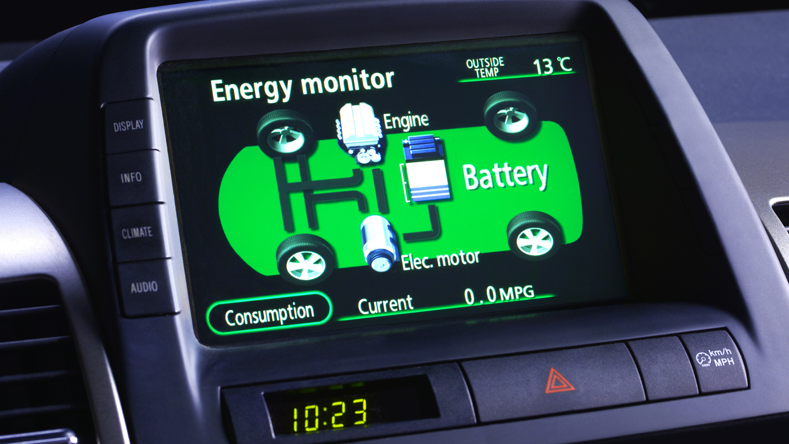

Hogyan működnek a hibrid autók?
A hibrid autók kétféle energiaforrást használnak: egy belső égésű motort és egy elektromos motort. Az elektromos motor általában alacsony sebességnél és rövid távolságokon működik, míg a belső égésű motor nagyobb sebességnél és hosszabb távolságokon lép működésbe.
A hibrid autókban két különböző hajtáslánc dolgozik együtt:
- Belső égésű motor (ICE): Általában benzines vagy dízelmotor, amely mechanikai energiát állít elő az üzemanyag elégetésével.
- Villanymotor és akkumulátor: A villanymotor elektromos energiát használ a jármű meghajtására, amelyet egy újratölthető akkumulátor biztosít.
Ezek a rendszerek egymást kiegészítve működnek, optimalizálva az üzemanyag-fogyasztást és csökkentve a károsanyag-kibocsátást.
Hibrid hajtáslánc típusai
A hibrid autókat működésük alapján több típusba sorolhatjuk:
- Párhuzamos hibrid (Parallel Hybrid): Ebben a rendszerben a belső égésű motor és a villanymotor egyszerre, párhuzamosan működik. Példa: Toyota Prius. A villanymotor a gyorsításoknál vagy alacsony sebességnél segíti a belső égésű motort, csökkentve annak terhelését.
- Soros hibrid (Series Hybrid): A belső égésű motor kizárólag az akkumulátort tölti, míg a hajtást csak a villanymotor végzi. Példa: BMW i3 (REX verzió). A jármű így gyakorlatilag elektromos autóként viselkedik, de az akkumulátor töltöttségének fenntartásáról egy kis benzinmotor gondoskodik.
- Plug-in hibrid (PHEV - Plug-in Hybrid Electric Vehicle): Ezeket a járműveket külső áramforrásról is lehet tölteni, ami nagyobb tisztán elektromos hatótávot biztosít. Példa: Mitsubishi Outlander PHEV. A nagyobb akkumulátorkapacitás miatt jelentősen csökkenthető az üzemanyag-fogyasztás rövid utak során.
- Mild-hibrid (MHEV - Mild Hybrid Electric Vehicle): A villanymotor kisebb kapacitású, és nem képes önállóan meghajtani a járművet. Csak támogatja a belső égésű motort, például start-stop rendszereknél vagy gyorsításkor. Példa: Audi A6 50 TFSI MHEV.